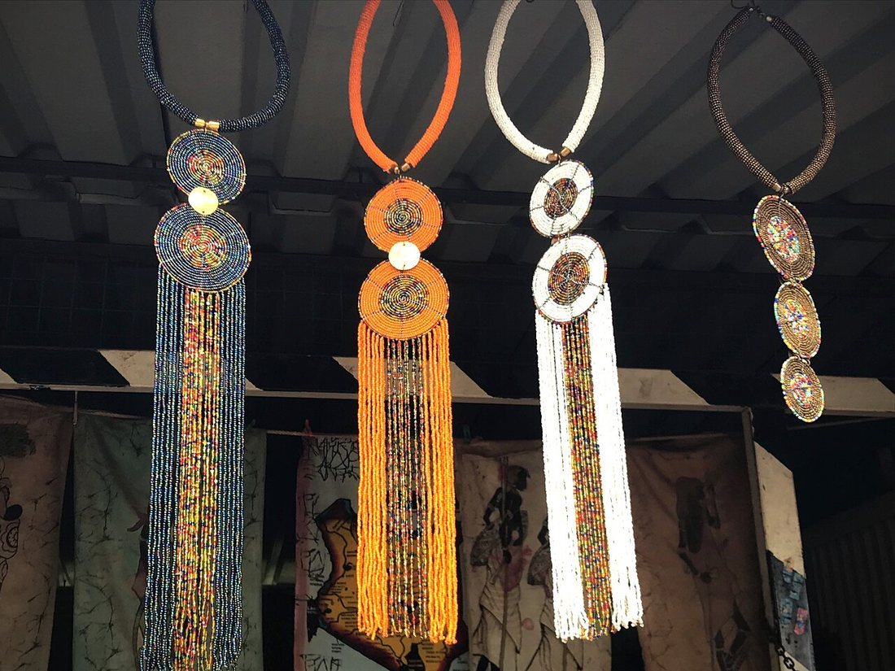
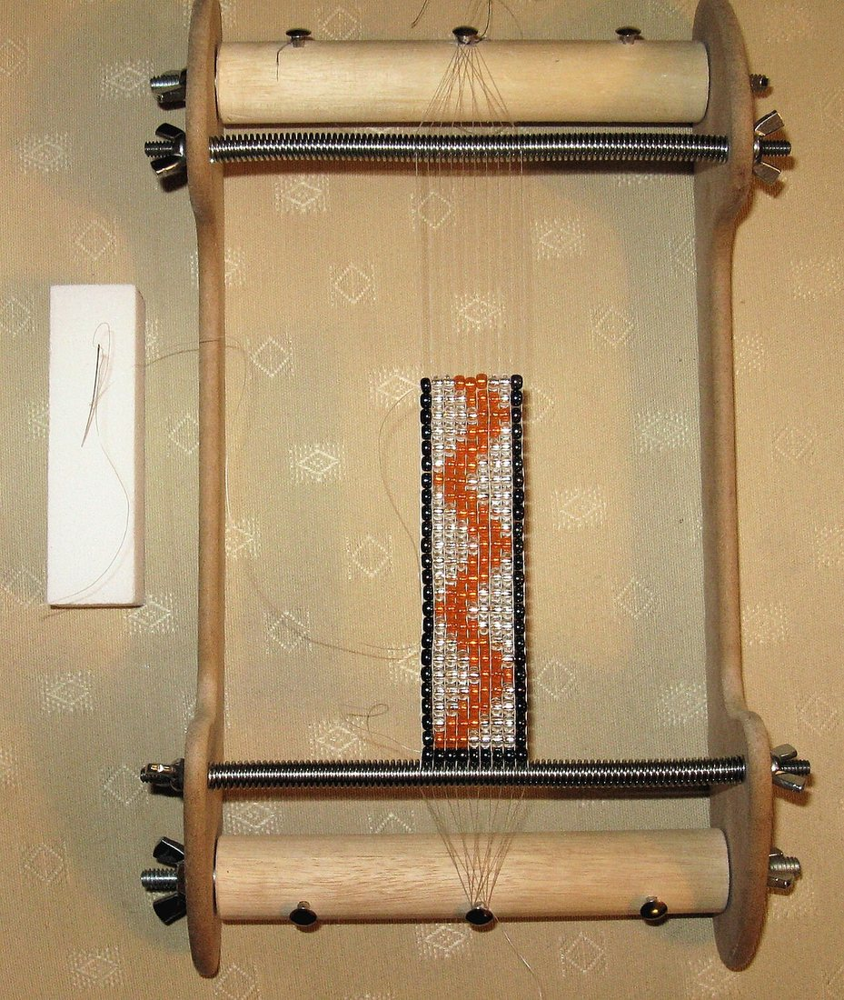
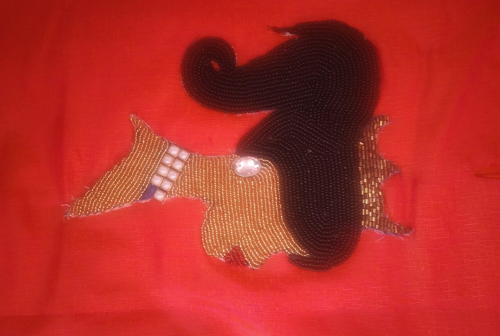
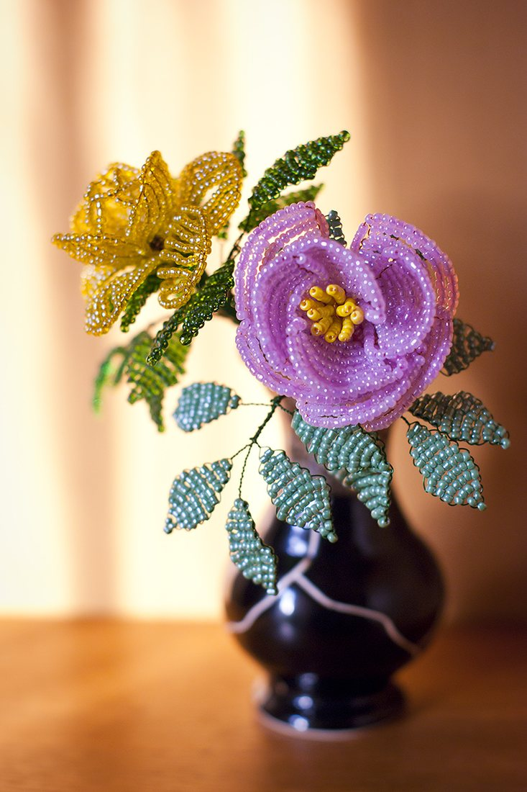
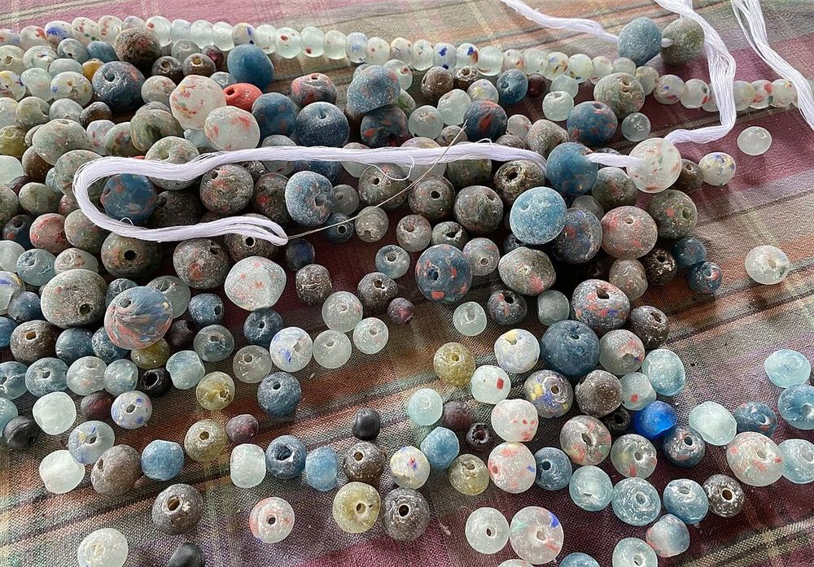

Көркем еңбек · 2-бөлім · Сәндік-қолданбалы өнер Art & Craft · Section 2 · Decorative & Applied Art Художественный труд · Раздел 2 · Декоративно-прикладное искусство
📿 Моншақ тоқу және әшекейлер
📿 Beadwork & Adornments
📿 Бисероплетение и украшения
Ұсақ моншақтан әсем әшекей мен бұйым жасау өнері. The craft of making beautiful jewellery and objects from small beads. Искусство создавать красивые украшения и изделия из маленьких бусин.
Моншақ тоқу (бисероплетение) — ұсақ моншақ пен түймеден әшекей, бұйым және сурет жасайтын ежелгі қолөнер. Тас, шыны, сүйек пен металдан жасалған моншақ адамдарды мыңдаған жыл бойы әсемдеп келеді. Beadwork is an ancient craft of making jewellery, objects and pictures from small beads. Beads of stone, glass, bone and metal have adorned people for thousands of years. Бисероплетение — древнее ремесло создания украшений, изделий и картин из мелких бусин. Бусины из камня, стекла, кости и металла украшают людей уже тысячи лет.
Қазақ халқында моншақ, маржан мен ақықты әйелдер әшекейіне, бас киім мен камзол көмкермесіне және тұмарға (қорған) қолданған. Бұл сұлулық қана емес, ырым-тілек те болған. Among Kazakhs, beads, coral and carnelian were used in women's jewellery, in the trim of hats and camisoles, and in amulets (tumar). It was not only beauty but also a wish of protection. У казахов бусины, кораллы (маржан) и сердолик использовали в женских украшениях, отделке головных уборов и камзолов, в оберегах (тұмар). Это была не только красота, но и пожелание защиты.
Моншақ тоқу тәсілдері Beadwork Techniques Техники бисероплетения
🔍 Үлкейту үшін фотоны басыңыз. 🔍 Tap a photo to enlarge it. 🔍 Нажмите на фото, чтобы увеличить.




Сондай-ақ мозаикалық және «кірпіш» тоқу тәсілдері бар — моншақтар қатар-қатар жымдаса өріледі. There are also mosaic (peyote) and "brick" stitches — beads interlock in tight offset rows. Есть также мозаичное и «кирпичное» плетение — бусины сцепляются плотными смещёнными рядами.
Материалдар мен құралдар Materials & Tools Материалы и инструменты

Нөмірі үлкен болса — моншақ ұсақ.The bigger the number, the smaller the bead.Чем больше номер, тем мельче бисер.
Шыны, ағаш, тас, металл.Glass, wood, stone, metal.Стекло, дерево, камень, металл.
Негізі: жұмсақ жіп немесе берік сым.The base: soft thread or firm wire.Основа: мягкая нить или жёсткая проволока.
Өте жіңішке ине.A very thin needle.Очень тонкая игла.
Жолақ тоқуға арналған.For weaving flat bands.Для плетения ровных лент.
Торкөзді қағаздағы өрнек жоспары.The pattern plan on grid paper.План узора на клетчатой бумаге.
Моншақ білезік: қадам-қадаммен A Beaded Bracelet, Step by Step Браслет из бисера: шаг за шагом
Таңда.Choose.Подбери. Моншақтың түсі мен сызбасын таңда.Pick the bead colours and a pattern chart.Выбери цвета бисера и схему узора.
Өлше.Measure.Отмерь. Лесканы білек өлшемінен ұзынырақ кесіп, ұшын бекіт.Cut the thread longer than the wrist and secure one end.Отрежь леску длиннее запястья и закрепи конец.
Тіз.String.Нанизывай. Моншақты сызба бойынша ретімен тіз.Add beads in order, following the chart.Нанизывай бусины по порядку, следуя схеме.
Бекіт.Finish.Закрепи. Ілгек тағып, ұштарын мықтап түйіндеп бекіт.Attach a clasp and knot the ends firmly.Прикрепи застёжку и крепко завяжи концы.
Тексер.Check.Проверь. Бұйымды тексеріп, қажет болса түзет.Check the piece and adjust if needed.Проверь изделие и поправь при необходимости.
💡 Кеңестер мен қауіпсіздік 💡 Tips & Safety 💡 Советы и безопасность
☀️ Ұсақ моншақпен жақсы жарықта жұмыс істе.☀️ Work with small beads in good light.☀️ Работай с мелким бисером при хорошем свете.
🟠 Моншақты науаға не матаға төк — домалап кетпейді.🟠 Pour beads onto a tray or cloth so they don't roll away.🟠 Высыпай бисер на поднос или ткань, чтобы не раскатывался.
⚠️ Ұсақ бөлшектерді кішкентай балалардан аулақ ұста.⚠️ Keep small parts away from little children.⚠️ Мелкие детали держи подальше от маленьких детей.
💬 Қорытынды 💬 In a nutshell 💬 Главное
Моншақ тоқу — шыдамдылық пен дәлдікті үйрететін өнер. Бірнеше тәсілді (тізу, станокта тоқу, кесте, француз тоқу) меңгеріп, өз қолыңмен әсем әшекей жасай аласың — әрі ол ұлттық дәстүрмен де ұштасады. Beadwork is a craft that teaches patience and precision. By mastering a few techniques (stringing, loom weaving, embroidery, French beading) you can make beautiful jewellery with your own hands — and it connects to national tradition too. Бисероплетение учит терпению и точности. Освоив несколько техник (низание, ткачество, вышивка, французское плетение), можно своими руками создавать красивые украшения — и это связано с национальной традицией.